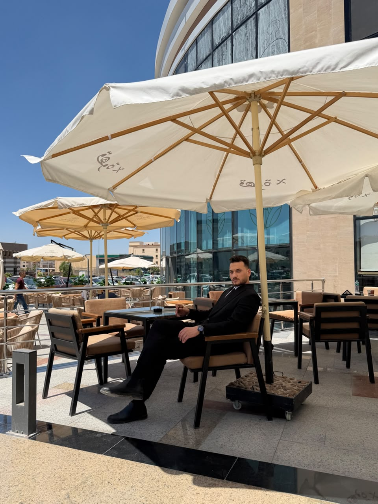
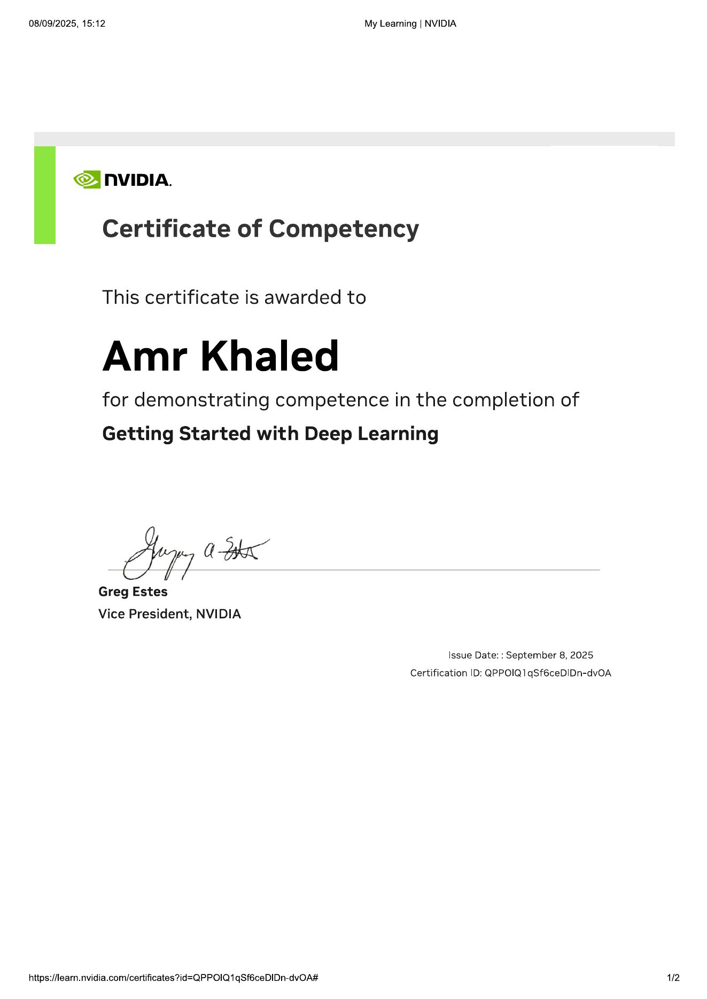
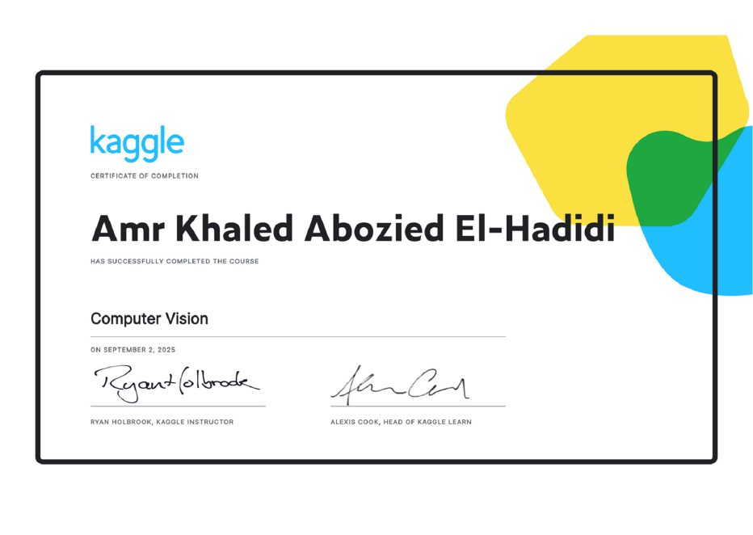

عن المهندس عمرو خالد01شرح بسيط 02تطبيق داخل الحصة 03متابعة قابلة للقياس
برمجة تُفهم بالتطبيق، ومتابعة تصنع تقدّمًا حقيقيًا
مؤسس Techno Minds، ومهندس ذكاء اصطناعي ومطور واجهات أمامية ومتخصص في أنظمة إنترنت الأشياء والهاردوير. الهدف ليس أن يحفظ الطالب كودًا، بل أن يفهم المشكلة ويصمم الحل ويجربه ويعرف كيف يطوره.
طريقة Techno Minds
تعلّم مهارة تعيش مع الطالب
كود حقيقي
الطالب يكتب ويشغّل ويصلح الخطأ بنفسه داخل المعمل العملي.
فهم المستقبل
مدخل واعٍ للذكاء الاصطناعي والبيانات، بعيدًا عن الاستخدام السطحي.
متابعة واضحة
حضور وواجب وتطبيق ودرجات وتقارير متاحة للطالب وولي الأمر.
الشهادات والتعلّم المستمر
خبرات موثقة في AI وDeep Learning
نماذج من الشهادات المهنية المضافة إلى ملف المنصة.


Python DevelopmentAI EngineeringML Machine LearningCV Computer VisionDL Deep LearningFE Front-EndIoT Hardware & IoT
ابدأ تجربة عملية